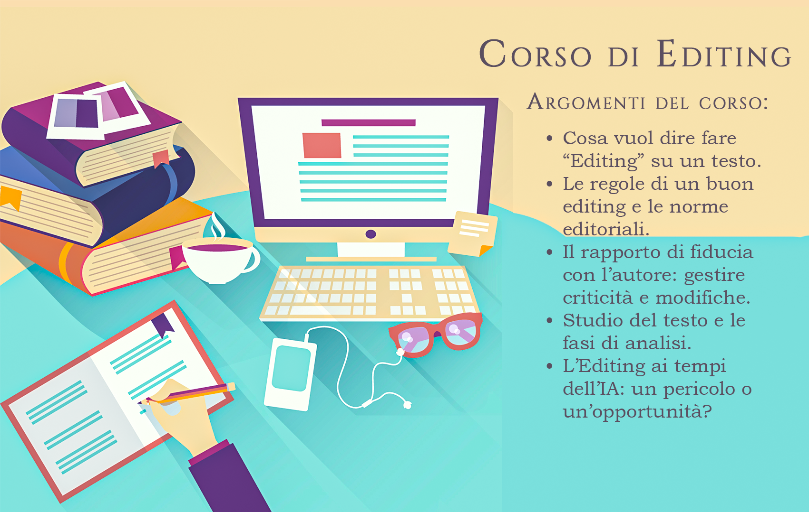

Introduzione
Quali sono quelle caratteristiche che rendono un editor, agli occhi di un autore, un silente compagno d’avventura e non, invece, un intruso all’interno della propria opera?
Cosa distingue un editing realizzato nel rispetto dello stile autoriale, da uno che ne viola invece i presupposti?
Annalisa, la nostra editor, una risposta a queste domande l’ha già, ed è pronta a condividere con te le linee guida, i segreti e, perché no, anche i trucchi del mestiere di una professione che lei vive dall’interno. Durante lo svolgimento del corso, acquisirai piena padronanza degli strumenti di cui un editor deve servirsi. Apprenderai quali siano le fasi di un lavoro ben costruito sul testo di riferimento e quali, invece, siano le worst practices da evitare. Ti saranno trasmessi, inoltre, i valori che un buon editor deve rispecchiare affinché il suo rapporto con l’autore sia sempre trasparente e funzionale.
E ricorda, noi di Dasc Editorie non lasciamo nulla al caso, e dato che il nostro obiettivo è quello di renderti un professionista che riesca ad operare in autonomia sin dal termine del corso, Annalisa ti insegnerà a restituire un valore economico ben ponderato al tempo e alla competenza che offrirai ai tuoi futuri clienti.
A corredare il corso, una sezione interamente dedicata all’utilizzo consapevole dell’IA nel campo dell’editoria. Claudio, il nostro AI specialist, sarà infatti l’ospite ad honorem di questo corso e affiancherà Annalisa nell’orientare gli studenti verso una pratica di prompting che permetta di salvaguardare il loro lavoro da output troppo automatizzati da parte dell’IA e, al contempo, agevoli e automatizzi alcune fasi del lavoro dell’editor.